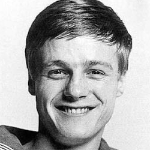

| Home | The Doctors | The Villains | |
|
|||
|
Benjamin "Ben" Jackson is a fictional character played by Michael Craze in the long-running British science fiction televisionseries Doctor Who. A seaman in the Royal Navy from 1966, he was a companion of the First and Second Doctors and a regular in the programme from 1966 to 1967. Ben appeared in 9 stories (36 episodes). The War Machines is the only serial in which Ben appears which is complete in the BBC archive, which is his first. Ben first appears in the First Doctor serial The War Machines, when he meets Polly and Dodo in a London nightclub called theInferno. As an Able Seaman serving in the Royal Navy, aboard HMS Teazer, Ben is feeling depressed and angry because he has a six-month shore posting while his ship is deployed to the West Indies, but Polly and Dodo try to cheer him up. When Polly is accosted by another patron in the Inferno, Ben comes to her rescue. Eventually, Ben and Polly aid the Doctor in his fight against the rogue artificial intelligence known as WOTAN. Afterward, Ben and Polly are the bearers of the news of Dodo's decision to stay in 1966 to the Doctor, and accidentally get carried away in the TARDIS when they try to return Dodo's key to the time machine. |